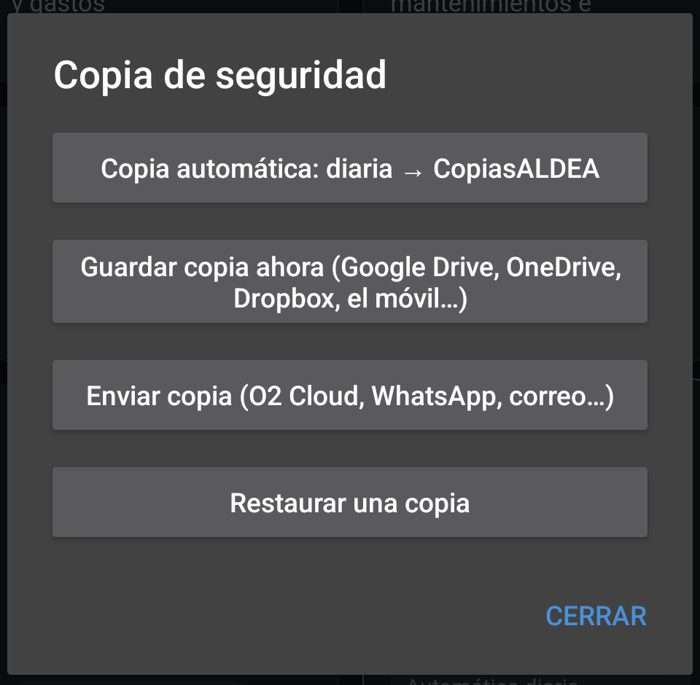
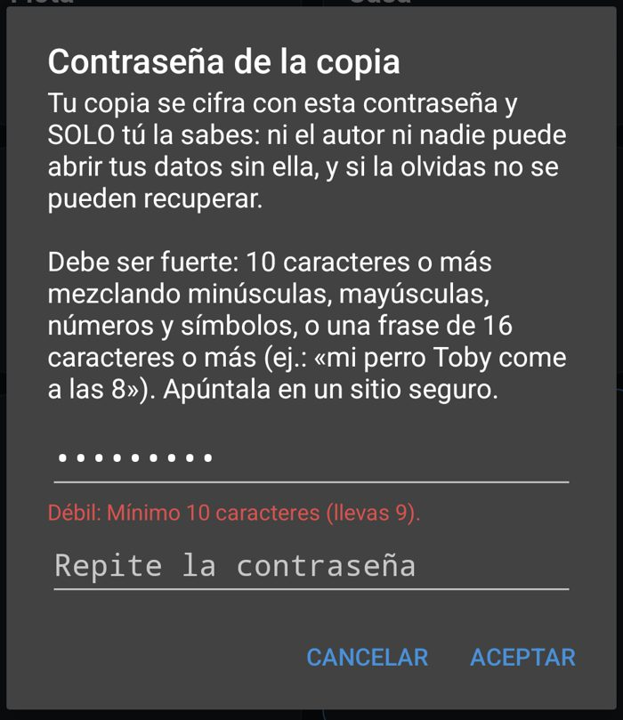
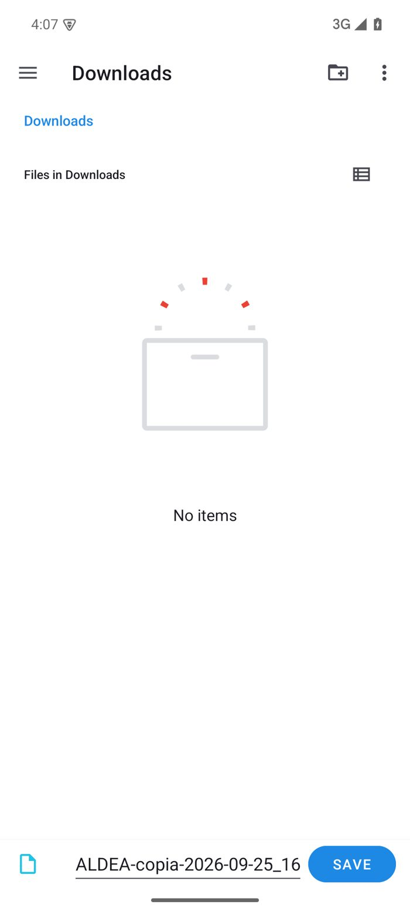

Tus datos están solo en tu dispositivo. Si lo pierdes, se rompe o desinstalas la aplicación, se pierden, salvo que tengas una copia. Activa la copia automática el primer día.
Todas las copias van cifradas con una contraseña que eliges tú: la nube solo ve un archivo ilegible.
La contraseña debe ser fuerte: 10 caracteres o más mezclando minúsculas, mayúsculas, números y símbolos, o una frase de 16 caracteres o más. El medidor te dice si es Débil, Aceptable o Fuerte.
Apúntala en un lugar seguro. Si la olvidas, nadie (ni el autor) puede abrir la copia.
9.1 Copia automática en la nube (recomendada)
- Portal › Copia de seguridad › Activar copia automática en la nube › Elegir carpeta.
- Elige tu nube (Google Drive, OneDrive, Dropbox…) y una carpeta, por ejemplo Copias ALDEA › Usar esta carpeta › Permitir.
- Elige cada día o cada semana, escribe dos veces la contraseña y toca Aceptar.
A partir de ahí, al salir de ALDEA, si ha pasado el tiempo elegido y hay cambios, se guarda sola una copia. Se conservan las 5 más recientes. La tarjeta muestra la fecha de la última y un aviso (!) si algo falla.
9.2 Copia manual, restaurar y cambiar de móvil
- Guardar copia ahora: eliges dónde guardarla. Enviar copia: la compartes con otra app.
- Restaurar una copia: elige el archivo .aldea, escribe su contraseña y toca Reiniciar. Sustituye todos los datos actuales por los de la copia.
- Móvil nuevo: haz una copia en el antiguo, instala ALDEA en el nuevo y pulsa «Enviar solicitud» (normalmente se activa al momento). Después, en Copia de seguridad › Restaurar una copia, carga la copia del antiguo: ALDEA te avisa de que es de otro móvil y te propone «Pasar ALDEA a este móvil». Al aceptarlo, tu licencia (y lo que tengas activado o pagado) pasa al nuevo y el antiguo queda en solo consulta. Vuelve a activar la copia automática.
- Sin copia (móvil roto o perdido): en la pantalla de alta del móvil nuevo, toca «Tengo un código de recuperación» y escríbelo. Ese código ya no vale después: ALDEA te da otro nuevo.
- Tu código de recuperación está en Copia de seguridad › Mi código de recuperación. ALDEA te lo enseña la primera vez: guárdalo fuera del móvil (en papel o en una foto en otro móvil). El autor no lo conoce.
- Tus datos pasan de un móvil a otro solo con tu copia: el autor no los ve. Si reinstalas en el mismo móvil, el código no cambia, pero hay que pedir el alta otra vez y, por seguridad, la aprueba el autor.
Tu licencia de ALDEA vale para UN solo móvil. Solo sigue funcionando en el nuevo si cargas en él una copia de seguridad del anterior (o usas tu código de recuperación). Al pasarla, el móvil anterior deja de funcionar: allí solo se pueden ver los datos y hacer copias.
Carga solo tus copias: si pasas la licencia con la copia de otra persona, su móvil dejará de funcionar.
Sin copia ni código de recuperación, escribe al autor: podrá pasarla si acreditas que el móvil era tuyo (por ejemplo, con el justificante de compra).



9.3 Otras formas de guardar tus copias
Por si un día falla tu nube o cierra el servicio. Están en Portal › Copia de seguridad › Otras formas de guardar tus datos.
| Dónde | Cómo |
|---|---|
| 📱 En el propio móvil o tarjeta SD | Sin internet ni cuentas. Elige una carpeta del móvil (por ejemplo Documentos › ALDEA). Ojo: si pierdes el móvil, pierdes también esta copia; úsala junto con otra. |
| 💻 En tu ordenador, por cable | Guarda la copia en el móvil y pásala al ordenador con el cable USB (pasos abajo). |
| 🏠 En tu nube privada | Si tienes Nextcloud, Synology u otra nube propia, instala su app en el móvil: aparecerá al elegir carpeta. |
| 🔁 Copia doble | Activa un segundo sitio para la copia automática: si uno falla, el otro sigue guardando. La tarjeta del portal te dice cuál falló. |
| 📊 Exportar a Excel | Saca tus datos en hojas que se abren con Excel, por si algún día no puedes usar ALDEA. Este archivo no va protegido con contraseña: guárdalo en lugar seguro. |
Pasar una copia al ordenador con el cable
- En ALDEA: Copia de seguridad › Guardar copia ahora, y guárdala en Documentos › ALDEA del móvil.
- Conecta el móvil al ordenador con el cable USB.
- En el móvil, toca el aviso del USB y elige «Transferir archivos».
- En el ordenador, abre el móvil (aparece como una unidad), entra en Documentos › ALDEA y copia el archivo .aldea a tu ordenador.
- Para devolverla al móvil, haz lo contrario y usa Restaurar una copia.
Lo más seguro: copia automática en la nube + una segunda copia en el móvil o en tu ordenador. Si la última copia tiene más de 7 días, la tarjeta del portal te lo recuerda.
9.4 Si no puedes usar ALDEA
- Exportar a Excel (Copia de seguridad › Otras formas de guardar tus datos): una carpeta por cada parte de ALDEA con sus hojas, y tus fotos y documentos. Se abre en cualquier ordenador.
- Abrir una copia en el ordenador: con la herramienta «Abrir copia ALDEA» (en la web de descarga de ALDEA o pidiéndosela a VicH.) eliges el archivo .aldea, escribes su contraseña y una carpeta, y aparecen tus datos, fotos y documentos. Sin la contraseña no se puede abrir.